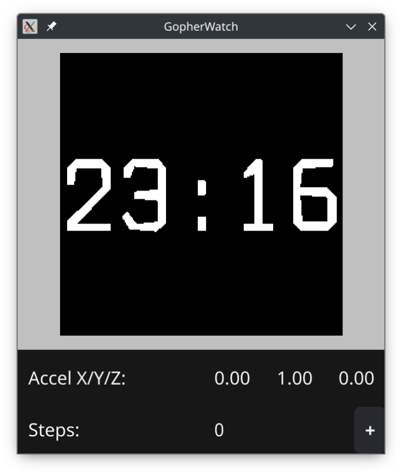

Hardware
| CPU |
Nordic nRF5832
Cortex-M4 (ARM 32-bit), 64MHz |
| RAM |
64kB |
| Flash |
512kB internal (program)
4MB external (data) |
| Display |
240x240 pixels
12/16 bits/pixel |
| Features |
Bluetooth (BLE only)
Heart rate sensor
Accelerometer / step counter |
Board package (HAL)
github.com/aykevl/board
- PineTime
- GameBoy Advance
- Gopher Badge
- Adafruit PyPortal
- MCH2022 badge
- Simulator (!)
Simulator

Configuring simulator
if board.Name == "simulator" {
// Watch dimensions:
// diagonal: 33mm, side: 23.3mm or 0.91 inch
board.Simulator.WindowTitle = "GopherWatch"
board.Simulator.WindowWidth = 240
board.Simulator.WindowHeight = 240
board.Simulator.WindowPPI = 261
board.Simulator.WindowDrawSpeed = time.Second * 12 / 8e6
}
Battery life
- Serial port
- DCDC converter
- Sleep mode: heart rate sensor, flash
- Accelerometer/step counter
- External buttons
- Bluetooth interval
Display hardware
- 240x240 pixels
- 16 bits per pixel
- 8Mbit/s
- = 8.5fps 😭
Display API
import "tinygo.org/x/drivers/pixel"
type Displayer[T pixel.Color] interface {
Size() (int16, int16)
DrawBitmap(x, y int16, bitmap pixel.Image[T]) error
Display() error
Rotation() drivers.Rotation
}
type ScrollableDisplay[T pixel.Color] interface {
Displayer[T]
SetScrollArea(topFixedArea, bottomFixedArea int16)
SetScroll(line int16)
StopScroll()
}
TinyGL!
- Text
- VBox container
- List box
- Scroll container (with hardware scrolling!)
- Canvas: rectangle, circle, line, text, image
- Custom widgets
- ...still missing many things
Future
- BLE security/privacy
- translations